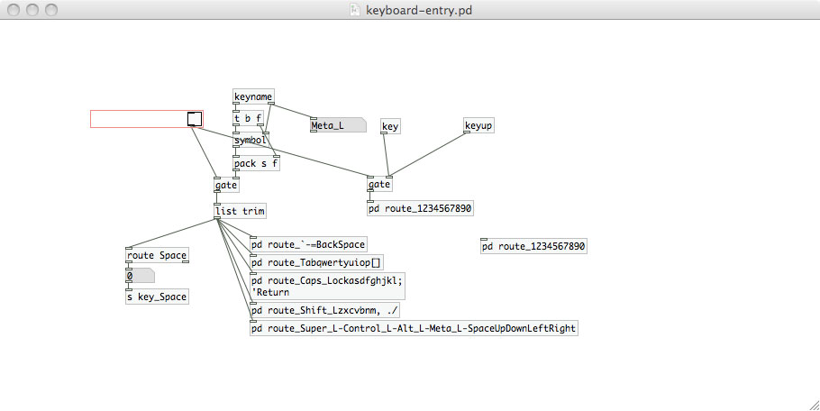
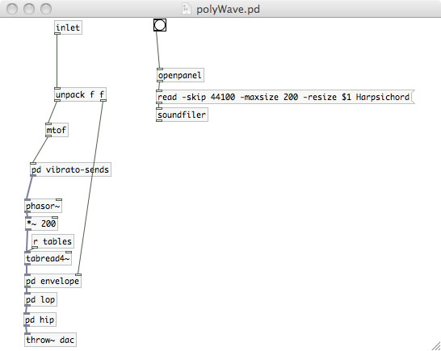

One Man Band
Reducing the need to hire a vibraphone player
This is a simple wavetable synthesizer that emphasizes the modern day computer's ability to mirror many sounds quickly and easily. The computer also allows one to create a variability in each instrument's sound with great speed (in this case, I install a vibrato mechanism). The simplicity of this patch makes the point that something fun and useful can be created with general ease.
The patch takes 6 single cycle waveforms from 6 real world instruments (steel guitar, violin, hand bells, harpsichord, and organ), and provides them each with a unique attack and decay. The keys of an OSX keyboard trigger the MIDI information to produce sound. I set up several of the keys to mirror a piano keyboard (the layout is shown at the top of the main patch). A vibrato and lo-pass/hi-pass filter mechanism change the sound, which are controlled by two grids with ease.
The patch can be downloaded here, however it will only work on an OSX system (the key strokes are defined differently for each operating system).
Screenshots and video:
Key stroke parser
Inside of the patch
Wavetable Voice